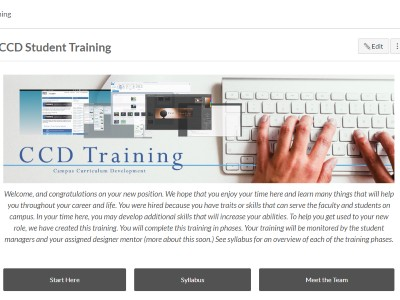

You’re Manager, Now what?
Congratulations on being the new student manager for CCD. Being manager could be a lot of responsibility. It is our hope that you will take this very seriously because everyone will be looking up to you for direction in the workplace. It is crucial to have a meeting with Rob and/or Matt, and receive some training from them. In the following chapters, the student manager’s duties and responsibilities will be discussed further.
Chapter 1- Meeting with Matt and Rob.
For further instructions, a meeting with the CCD supervisor is advised before or after reading this handbook. Some of the duties and responsibilities that the student manager will be trained on are:
- Being aware of the student employees’ needs and what projects they are working on
- Trello
- One-on-one meetings with the student employees,
- Training, Accountability, Goals, Personal, Policy (TAGPP),
- Weekly Student Meetings.
A student manager should have a one-on-one meeting with the student employees every other week and they will be having one-on-one meetings with their mentor designers. The major thing to remember in having one on one meetings are TAGPP (Training, Accountability, Goals, Personal, and Policy), which is explained below. The student manager can follow through this format in any order.
Training – The student manager gives training or instructions to the students on some important resources and work responsibilities like Trello, SharePoint, emails, projects, etc.
Accountability – This is the opportunity to learn from student employees on how they are doing with Trello, how they are keeping track of their work clock in and out, and how they are working along with all other student employees.
Goals – Students have to set goals with the student manager, themselves, and their designer mentors. They have to be specific goals and it has to stretch themselves. The student manager is not excluded from setting goals also as he or she will have their one on one meetings with the CCD supervisor. The student manager will also review these goals with the students on their one-on-one meetings. Set up a constant time to meet every other week.
Personal – This is the time to get to know the student employees better and ask about their personal lives.
Policy – Review the CCD Policies with the student employees as needed. Some of the Policies include the BYU-I Honor Code, professionalism, courtesy and dedication. Take time to review this every once in a while.
It is important to get the link to the student schedules. Take time to review the schedule and make sure that everyone is coming to work when they are scheduled to. Also remember that because the student manager has access to the schedule, they are accountable in following their work schedule. Use righteous judgment. There might be links to other resources like Goal Schedules, Kitchen Schedules, Meeting assignments, and others. It will depend on the Previous Manager and/or if you are coming in as an assistant manager. If there are no access to these links, you might want to make your own to keep track of things.
Chapter 2 – Student Schedules
The student manager is responsible for managing the schedules of students. This includes which computer the student employees will be using, and when they will be coming in or out. Here is the link to the schedule if it wasn’t provided earlier. Use righteous judgment when deciding who will use those computers. The best way to decide is to determine who needs a pertaining to software for that semester as well as who request for the computer first. At some point towards the end of the semester, around week 10 -13 or when registration open, you need to start getting schedules from students for the next semester. This helps the designers plan what projects to give and who will be in C3. Google Sheet Link
Chapter 3 – Student Meetings
Student meetings are held every Thursday during forum hour. Send out emails weekly at the start of the week (Mondays preferably) consistently with important information that pertains to the meeting and the week. Depending on the events happening that week, send out one to the designers as a way of important information. The agenda for the meeting should follow this order keeping respect to time:
- Opening Prayer and Spiritual Thought: less or equal to 7 minutes.
- Announcements: less or equal to 5 minutes.
- Project Presentation: less or equal to 15 minutes. Students make a slide of things they are working/worked on and take other students through the process of what they did. They are welcome to go all out and take this seriously. You can assign more than one student to present their projects depending on the week. There should be questions asked about the projects and there should be feedback.
- Training: less or equal to 20 minutes. Pick a student (that includes the student manager) to give the training regarding the resources such as designing and copyediting, or soft skills such as teamwork and communication.
These meetings can be less than an hour but they shouldn’t exceed an hour unless on special circumstances.
Chapter 4- Hiring Process
A student manager gets to participate in the hiring process of the CCD. This is very exciting and also very challenging. This process changes constantly but this information was given is as recent as of 2019. Rob or the designer in charge of the student employees puts the application on the job board. You should be in the loop with Rob and Matt on what’s going on. Those who applied are sent a HireVue email. (LINK) HireVue is an enterprise video interviewing technology vendor that allows recruiters and hiring managers to screen candidates and conduct live interviews over the Internet.
The student manager will get link for the invitation to view the applicants’ response to the questions they were asked. Then the student manger and the designers will give them a rating. Arlen will send an email with the added average of the applicants that did well from top to bottom.
Depending on the number of students CCD wishes to hire, they will be taken to the FTC for the second round of interviews. They will be quizzed on their skills of certain things like copy editing, translating, teamwork, etc.
Arlen will send an email regarding the applicants that did well on the second round, and the manager and the designers will decide on who to bring in for interviews, which is the last round. The student manager will contact the applicants that CCD decided to bring in and set up times for them to come for their interviews. Before doing this, get the schedules of each designer, then send out times for the applicants to pick from. Doing this will give an idea of when to have the most designers for an interview.
Print out the STUDENT EMPLOYEE INTERVIEW QUESTIONS and if possible, print out the applicant’s resume. During the interview,
- take the lead in welcoming the applicant and stating the order the interview will go;
- the student manager and the designers will have the chance to talk about each candidate and who to hire;
- when it was decided of whom to hire, send out the emails to the applicants and let them know of the decision.
Chapter 5 – Training New Employees
The student manager is responsible for training new employees. When the applicants accept the job, get their schedules and their I-numbers from them (so they can have access to SharePoint). A couple of rules that the new employees must be aware of:
- You must work at least 2 hours when you come in except for meetings.
- You can’t work more than 5 hours without taking a break.
- They can set their schedule anytime from 8 am to 6 pm.
- Matt has made it so that if a student is working full time they can get paid for devotional. (they have to leave at least 30 minutes before devotional starts), talk to matt and rob to find out more.
After schedules comes training. The student manager can assign another student to help with the new employee depending on schedules. Here are the steps of training:
- Take them to the designers’ offices and introduce them to Matt Anderson (director), then Rob McKenzie (in charge of students). Jilane, Debra, Sam (in charge of the assessment services), Gaylen, and then the assessment services.
- Show them to their designer mentor as you take them to see the designers.
- Show them their workstation that they have been assigned to.
- Teach them about workday and how to use it.
- Employee Day one Handout.
- Have them log in to the computer and go to Chrome.
- Have them create a Trello account and add them to Trello.
- If they don’t have a CCD Username (ccd_account name) to log in Canvas, which they will likely not have, log in with your CCD account and have them go through the CCD student training. It should take them about a week or two depending on the situation.
- Get a picture from them and add them to meet the team page and the org chart.
- At the end of their first day, meet with them and talk about their day.
- Answer any questions they may have.
- Make sure that the New Hires check in with HR BEFORE THEY START WORKING. It is illegal for them to start working without checking in with HR.
Chapter 6 - CCD Canvas Page
A student manager is responsible for the CCD student page on Canvas. Once in a while it’s important that you check and go through the Canvas page to see if it needs updating. They can also have a student or two that can look at the course in Canvas and see if there is anything that was missed that is needed to be seen.
Chapter 7 - White Board
A student manager can assign someone or themselves to keep the white board updated. {PICTURE OF THE WHITEBOARD} It should be updated at least every week but can be updated as information unfolds.
Chapter 8 - Removal
This position is not permanent and you can be removed either by yourself or by Matt. Here are the things that can contribute to that:
- If you are not doing well as a manager, either struggling to keep up to task. It is important that you let Matt know so that they can either help you or help who the new manager will be.
- If you are going to get a new job or looking for a new job, you should let Matt and/or Rob know so they can plan for it. You should give them at least 2 weeks before you leave so that you can help with the transition process of the new manager.
- If you feel you want to work less hours that is required for a manager due to personal or other issues. This is less than 15 hours. You might need to be removed or have someone to assist you, which leads to Chapter 9.
Chapter 9 - Assistant Student Employee Manager
A student manager can have someone to assist them,
and this person does virtually everything that the
student manager do, except the assistant takes
directions from the student employee manager.
Daily activities Weekly activities Bi-weekly activities
Monthly activities